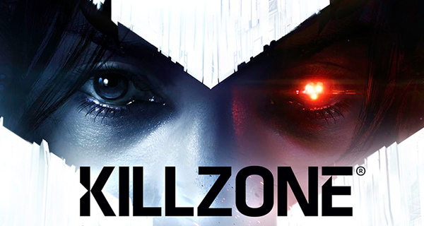
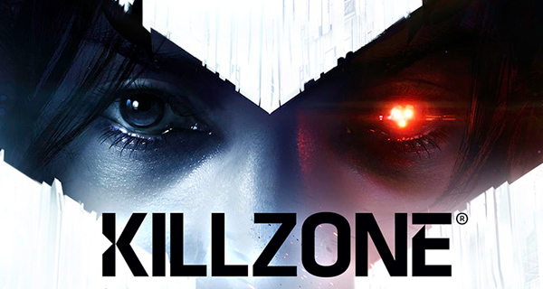
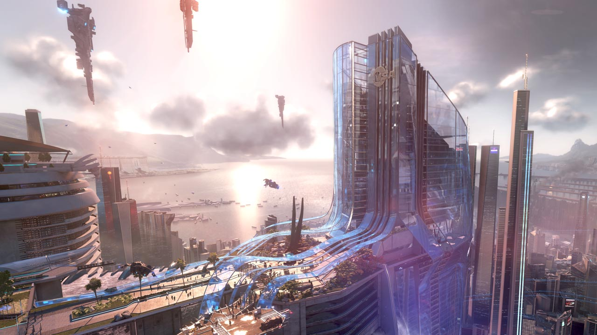
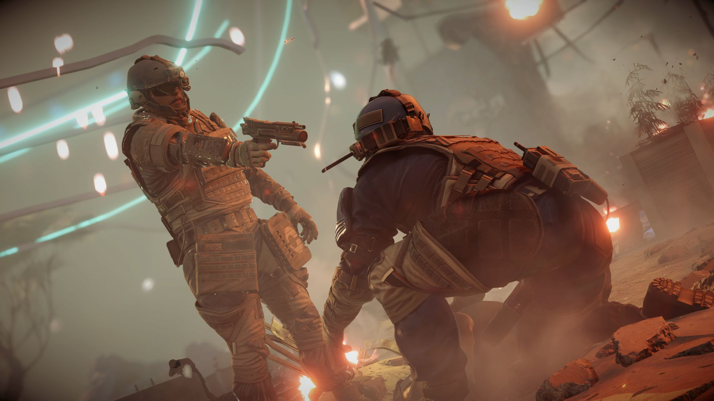
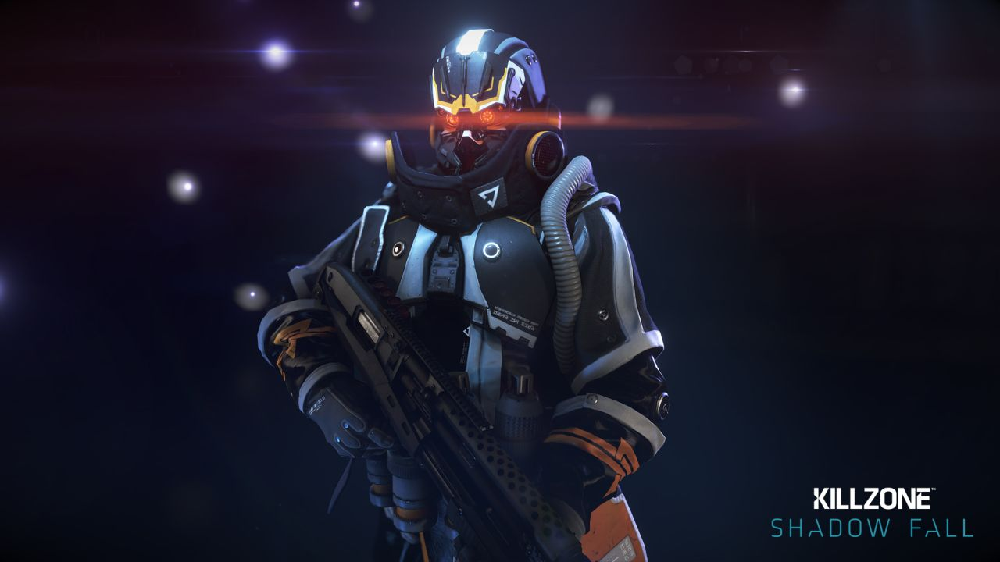

Killzone: Shadow Fall

Game Trailer
Killzone Shadow Fall Gameplay Review
Review sorce www.giantbomb.com
Written by Jeff Gerstmann on November 17, 2013
If you're specifically looking for Killzone's unique brand of mixed-mode multiplayer, where the shooting seamlessly migrates from deathmatch to capture and hold to a series of other objectives without pausing or reloading the map, Killzone: Shadow Fall offers that with some interesting ideas that make it slightly more accessible and give it more options than its predecessor. It's a quality multiplayer shooter paired with a lackluster campaign that starts out with promise that it completely squanders by the time the credits roll.
Killzone 3 ended poorly, with a devastating blast that rocks the enemy planet of Helghan and elicited nothing but shrugs and a chuckle from this reviewer. Killzone: Shadow Fall on the PlayStation 4 flashes forward from that moment and attempts to make good on it with a premise that attempts to reframe the conflict between the fearsome Helghast and the people of planet Vekta. The campaign has some exciting early moments, but the middle starts to sag and the final chapters are straight-up bad. Along the way the game really tries to hammer home that old "war is hell" motif by showing you more of both sides than you've seen in previous games, hoping that you'll start to wonder who the bad guys really are in this ongoing conflict. It's more than a little ham-fisted in its delivery, though, with stock characterizations and a lot of corny dialogue. It has all the subtlety of flashing a title card that reads "WHO IS THE REAL MONSTER??????" every 30 minutes. On top of all that, the ending actually manages to be worse than Killzone 3's final moments.
The campaign starts strong, with a solid setup and an early mission or two that gives you the feeling that Shadow Fall is going to be more open than its predecessors, with more opportunities to use tactics and take alternate routes to reach your goals. But after that first mission or two, the mid-game is an empty husk, like the developers spent a ton of time making large, intricate areas for you to navigate, and then forgot to put anything interesting to shoot at in most of the levels. One mission largely consists of you running around a seemingly dormant research ship and moving large batteries around to power different doors, like you're some kind of intergalactic electrician. It's a dark ship full of boring busywork, the kind that people tend to play video games to get away from. It isn't even presented as a puzzle, because the items you need to open the doors are usually sitting right next to the empty sockets you need to fill up. It's all downhill from here, culminating in a set of final moments that are just straight-up bad, including one area where you're gliding, Pilotwings-style, through a collapsing city. It looks impressive, but the controls are rotten, resulting in many, many restarts. Once you safely memorize the level and land, you're allowed to play through the final areas, which pit you against large enemy robots that require more fussing around with power cells. Then there's the final slog, which does that thing where you're sent into large, arena-like rooms that fill with soldiers and don't offer enough checkpoints. These final bits are also good at showing off the game's questionable AI. I witnessed enemies that ran right past me to take cover against an item that wasn't blocking my line of fire at all, making dispatching them quite easy. Other enemies ran into low walls and kept running, unable to figure out how to mantle over and continue moving. Still others were just running back and forth across a hallway, as if they couldn't decide which way would be best.
It's all so frustrating to see because the campaign starts out with such promise. At the beginning of the game you're given a robot buddy called an OWL, and it gives you four secondary abilities that you can call upon over and over again. One sends the OWL out in drone form, where it hovers just overhead and shoots at enemy targets. That's probably the most useful. Another shocks and stuns enemies, but it's really only necessary when you're dealing with shielded enemies that only show up near the end of the game. One ability pops a translucent shield that you can fire through, and the last is a zipline that lets you traverse large areas--but most of these large areas are frontloaded, so as you continue, you have less reason to zip around from one place to the next. In a better game, these abilities would feel refreshing and mix things up nicely. Instead they just feel like another missed opportunity.
The multiplayer follows a lot of the popular concepts in persistent multiplayer shooter design, with loadouts that you can customize with different primary weapons, pistols, and abilities. Furthermore, all these items are broken out across three classes, so scouts get the sniper rifles and cloaking device, support guys lay down LMG fire and revive downed teammates, and assault takes standard rifles, speed boosts, and other middle-of-the-road abilities. Unlike most of those other multiplayer shooters, most of the options in Shadow Fall's class system are available right off the bat, with no unlocking required. The abilities will level up and become more effective as you use them, and weapon attachments like flashlights, laser sights, under-barrel shotguns, and scopes unlock as you use each of the weapons. But there aren't any experience points to earn and no levels to gain. Instead the game ranks you by the number of challenges you've completed, and there are well over a thousand, ranging from weapon- or ability-specific sets of tasks to things like being the MVP once on each of the game's maps. It's an interesting approach, but since there are still things to unlock, you'll still be working to fine-tune your loadouts to your liking as you play.
The competitive end of Killzone: Shadow Fall looks sharp and runs at a faster frame rate than the single-player, and it has that signature Killzone pacing to it that makes it feel different and more deliberate than the modern-military shooters that dominate the genre these days. The weapons are loud and satisfying to fire. The kills take just enough ammo to feel like you earned them. And you'll be able to focus on a lot more than just shooting people in the face. The way the warzones can be configured means you'll always have something slightly different to try. You can built your own server configuration by setting a map rotation, allowing or disallowing any of the specific weapons and abilities, forcing factions to play as specific classes, setting a number of respawns, allowing or disallowing bots, and so on. This means that if you want to limit the action to just beacon retrieval missions and search & destroy sections while ensuring that every player is using a pistol, you can. In fact, as of this writing, that mode is up and already available. The level of match customization helps keep things fresh since you can get out and find players playing in a variety of different ways.
That level of customization can clash with the way player loadouts are built and saved, though. If you go into a warzone with restrictions on which equipment you can use, the game doesn't give you a separate set of appropriate loadouts or build new defaults that are tailored for the current ruleset, so the first time you join up you have to frantically create new combinations of items and save them to one of the four slots you get for each class. If you're only flipping between standard rules and a pistols-only warzone, this isn't a big deal. But if you start to jump around from one set of rules to another and create your own along the way, you'll find yourself constantly overwriting your slots. The game could be better about handling part of this process for you, but the level of choice you're given over creating a server and tweaking the rules is worth the bit of discomfort up-front.
Still images of Shadow Fall look outstanding, and it often looks great in motion, too. The environments are large and the lighting is technically proficient, if a little overused. The opening mission gives you a lot of volumetric lighting through the trees and a lot of the enemies have blinding flashlights mounted on their guns, giving the game plenty of opportunities to scream "hey, this hardware is powerful to handle all this now!" The light show settles down after a mission or two and gives you some good-looking dark areas, too. The environments are usually large, though the game doesn't give you a ton of reasons to explore unless you're into collecting audio logs and comic book pages. The multiplayer runs at a higher frame rate than the campaign, but the multiplayer also has an odd motion blur effect that makes the game look overly blurry. Also, on some maps the blur effect that kicks on when you start running takes a little too long to clear up when you stop moving, which is distracting and a little ugly.
For me, Killzone's visuals have always lived and died by its design and animation. Even if that first game was pretty bad, the Helghast looked awesome, like fearsome future Nazis that you couldn't wait to gun down. At this point in the story, the need for thick, baseline troopers is a bit diminished, so you'll face more nimble-looking, cloaked Helghast. The game attempts to retain some of the signature looks of the enemy, with glowing eyes and black garb, with varying degrees of success on the different types of foes. The animation feels canned now that the rest of the visuals around them look so great, and there are plenty of moments in the campaign where you see an AI ally snap into a locked standing position to deliver a line of dialogue, then jerk out of that pose into a scripted walk over to a door, where they turn turn and snap back into a talking position to say something, and so on. Things like climbing ladders feels extra robotic, too. Plenty of other games have these sorts of issues, but it would have been nice to see some of those rough edges smoothed out on new hardware.
Killzone: Shadow Fall is a real mix of highs and lows, so where you come out on it will depend on your interests. If you don't care about campaigns in your first-person shooters, Killzone provides a solid alternative to the modern-military games that are all the rage these days. It's highly configurable and the developers claim to have multiple free updates in mind for future expansion. But if you want a story and like to shoot your way through a great campaign, Shadow Fall has too much downtime and too many frustrating moments to recommend.